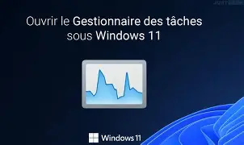

Univers Science-Fiction
Je suis un grand amateur de films de science-fiction qui explorent les futurs dystopiques, l'intelligence artificielle et l'exploration spatiale. Ces œuvres stimulent souvent mon imagination pour de nouvelles interfaces.